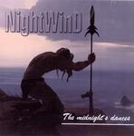

Home Artist links

NightWinD - The Midnight's Dances
| Artist: | NightWinD |
| Title: | The Midnight's Dances |
| Label: | self produced |
| Length(s): | 12 minutes |
| Year(s) of release: | 2005 |
| Month of review: | [11/2005] |
Line up
Victor Nazarov - vocals
Dmitry Korotkov - drums
Yuriy Greshnikov - bass
Alex Gutsov - guitar
Tracks
| 1) | Mistress | 5.40
|
| 2) | The Rhythm Of My Heart | 6.21
|
Summary
A strange submission this. It mentions more songs than I found (eight others
in fact). Conferring with the band led me to assume this is a taster for that album.
The music
Mistress is art rock with a strong role for the electric guitar.
There are some psychedelic elements, but the music does sound modern
enough. We do get some church organ. The vocals are rather flat, which
is often the case with Russian bands: they tend to sound very somber,
reminding me of Gothic bands more than they do a prog band.
A drawback is that the backing vocals are not well integrated with the
lead vocals giving the song a very restless feel.
Although a drummer is present, he sounds very much programmed.
Or maybe he uses an electronic kit and is a very tight player. I do not
know. However, it does make the song come over rather lifeless. The keyboard
work is what makes this song most appealing, especially the somewhat
optimistic ones slightly passed halfway.
Second and last is The Rhythm Of My Heart. This one opens as a ballad
track moving slowly, and the vocalist not easy to understand. The guitars
can be quite heavy here, but they are used sparingly. At some point dies
down, and I hear plenty of noise. Is that how it should be? I am not so sure.
Melodically, this is quite okay, but the music does not speak to me.
I do seem to hear some uncredited violin.
Conclusion
Somber and melodic material, sometimes I think of them as gothic, sometimes
a bit progmetal, so let us call it art rock and be done with it.
The band has a lot too learn, especially when it come to vocals and injecting some life into their music (I admit music does not need life, but I think this kind of music does). Melodically, I hear some nice things, but there are still plenty of things to improve.
© Jurriaan Hage